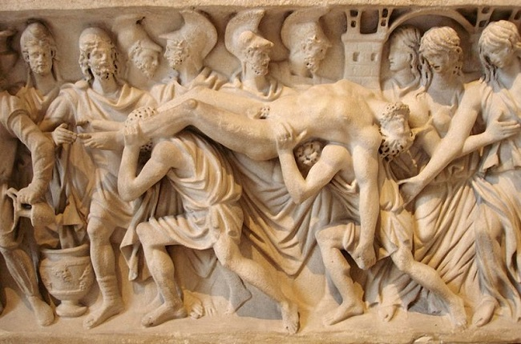
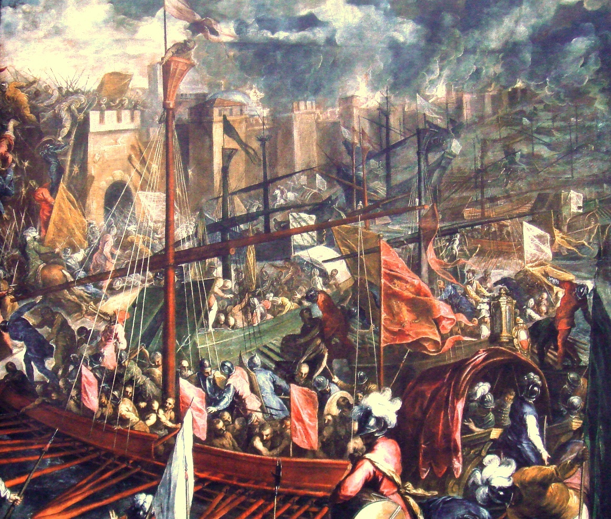
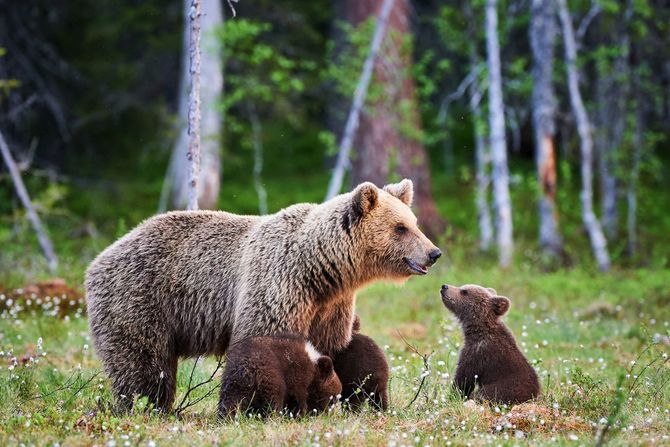
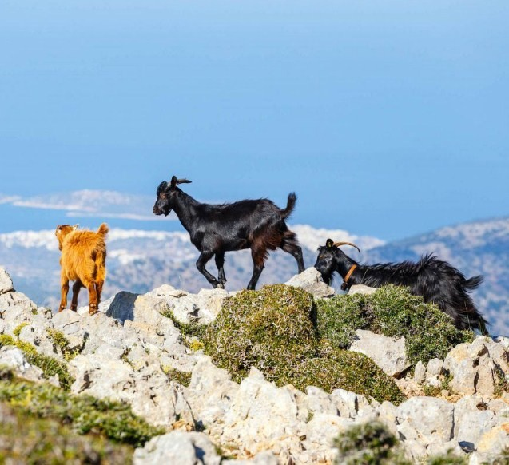

Grecia, tambien llamada oficialmente como República Helética, es uno de
los veinteciete Estados soberanos que forman la Unión Europea.
Grecia está estrategicamente ubicada entre Europa, Asia y África y
comparte fronteras terrestres al noroste con Albania, al norte con
Mecedonia del Norte y Bulgaria, y al noreste con Turquía. Al este se
encuetra el mar Egeo, al oste el mar Jónico y al sur, el Mediterráneo.
Atenas es la capital de Grecia y la ciudad más poblada del país. El Pireo,
Patras, Heraclión y Lárisa, son otras ciudades que funcionan como centros
politicos, económicos y culturales a nivel regional.
Desde el Paleolítico se atestigua la presencia del hombre en Grecia (3200 a. C. a 2000 a. C.), y en Asia Menor. En la isla de Creta se desarrolló la primera civilización avanzada, la cretense o minoica. Durante su época de mayor esplendor (período Minoico Medio, hacia 1950 a. C. a 1550 a. C.), se construyeron los palacios de Cnosos, Festos y Hagia Triada. Por otro lado, los aqueos o protohelenos se establecieron en la Argólida, donde construyeron las fortalezas de Tirinto y Micenas, de la que derivó el nombre micénica que se da a su elevada civilización, asimiladora de la cultura minoica. Hacia el 1550 a. C. comenzó un período de apogeo a ambos lados del mar Egeo, que culminó con la conquista de Creta. A comienzos del siglo XII a. C., los dorios irrumpieron en la Grecia continental.

Tras la división y caída del Imperio romano, Grecia pasó a formar parte
del Imperio bizantino, el Imperio romano de Oriente, que perduró desde el
siglo V hasta 1453. Su capital se ubicó en Constantinopla, su idioma y
literatura se basaron en la lengua griega y la religión predominante fue
el cristianismo ortodoxo.
Desde el siglo IV, los territorios balcánicos del imperio, incluida
Grecia, sufrieron del constante embate de las invasiones bárbaras. Los
asaltos y la devastación de los godos y hunos durante los siglos IV y V, y
la invasión eslava del siglo VII, provocaron un colapso dramático de la
autoridad imperial en la península.
A finales del siglo VIII, el Imperio bizantino comenzó a recuperar
gradualmente sus territorios perdidos, y para el siglo IX la mayor parte
de la Grecia actual se encontraba nuevamente bajo el control bizantino.

Luego de la Cuarta Cruzada y la caída de Constantinopla ante los latinos
en 1204, la mayor parte del territorio griego pasó a manos de los francos
(un periodo conocido como «Francocracia»), y algunas islas fueron tomadas
por Venecia.
En el siglo XIV el Imperio bizantino perdió varias zonas de la actual
Grecia ante los ataques de los serbios y los otomanos. A principios del
siglo XV, el avance otomano significó que el control bizantino sobre
Grecia se redujo al Despotado de Morea en el Peloponeso.
Durante la época clásica (siglos VI y V a. C.), las principales
ciudades-Estado griegas (como Atenas, Corinto, Tebas, Esparta y Mileto)
fomentaron el desarrollo del arte, la arquitectura y la literatura. De
esta época datan las construcciones de grandes templos, como el Partenón,
dedicado a la diosa Atenea, y el Hefestión en Atenas.
A su vez, el crecimiento de los estudios especializados impulsó un gran
avance en la filosofía, las ciencias naturales y las matemáticas. En este
sentido, se destacan las obras filosóficas de Platón y Aristóteles, y los
estudios médicos de Hipócrates.
Este desarrollo cultural se convirtió en una de las principales bases de
la cultura europea posterior, junto con la cultura romana que se
desarrolló unos siglos después. En el siglo XVI, durante la época del
Renacimiento, los artistas y estudiosos europeos revalorizaron los estilos
y las obras de la cultura griega.
Gracias a la variedad de climas y paisajes, en Grecia se encuentran más de
5500 especies de plantas.En las tierras bajas es común encontrar árboles
frutales como naranjos, olivos, dátiles, almendros, granadas, higueras y
la vid. En terrenos más altos abundan los pinos, robles y castaños. En las
zonas montañosas por encima de los 1070 m s. n. m. crecen árboles como la
haya y el abeto.

A principios de los años 2000, había 116 especies de mamíferos, 422 de
aves, 126 de peces, 60 de reptiles y 20 de anfibios. En los mares que
rodean a la Grecia continental habitan algunas especies marinas únicas
como las focas pinípedas y la tortuga boba. Por su parte, en los bosques
densos habitan algunas especies de mamíferos amenazadas como el oso pardo,
el lince y el corzo. La cabra salvaje, extinta en el resto de Europa, aún
vive en algunas montañas e islas del país.

En Atenas se hallan los monumentos arquitectónicos más importantes que ver en Grecia. El Partenón se erige imponente en la Acrópolis, desde donde, junto con otros templos y construcciones, domina la capital griega. Otros lugares emblemáticos donde poder conocer el arte y la historia de la ciudad son el Ágora antigua, el Ágora romana, el monte Licabeto, el museo de la Acrópolis y el templo de Zeus Olímpico.
Aunque hay muchas islas que visitar en Grecia, las más conocidas de todas
son las que forman el archipiélago de Santorini.
Puedes recorrer las islas que forman Santorini en barco. La villa más
romántica es Oia, aunque la mayoría llega con el ferry a Fira.
Naxos es la más grande y fértil de las islas Cícladas que reposan en el Egeo. La lluvia es generosa en la zona y permite que la población de la isla pueda vivir de la recolección de frutas y verduras, apoyándose también en la ganadería y el turismo. Como es habitual en Grecia, en Naxos podrás encontrar varios sitios arqueológicos incluyendo una antigua fortaleza veneciana y preciosas playas.
La isla más grande del Dodecaneso se encuentra a tan sólo 18 km de las costas turcas y posee un gran legado de mitos y leyendas, además de algunas de las playas más famosas que visitar en Grecia. En Rodas, el mito dice que Helios engendró 8 hijos con la ninfa Rodo, hija de Poseidón. De ella proviene el nombre de la isla y sus más de 300 días de sol al año. La capital de la isla llamada también Rodas posee la Ciudad Medieval, declarada Patrimonio de la Humanidad por la UNESCO. Los museos Arqueológico y Bizantino son los más visitados.
El sitio arqueológico de Delfos fue declarado Patrimonio de la Humanidad por las UNESCO y figura en todos los listados de lugares turísticos de Grecia. En la antigüedad aquí se encontraba el oráculo de Delfos, ubicado dentro de un templo dedicado al dios griego Apolo. Delfos era considerado en el mundo griego como el centro del Universo. Hoy en día, Delfos es un pequeño pueblo que se encuentra en la ladera sur del monte Parnaso. Desde el punto de vista arqueológico, no te puedes perder el templo de Apolo, el teatro con capacidad para unos 5.000 espectadores y el museo arqueológico.
Situada entre Creta y Rodas, en pleno archipiélago Dodecaneso, se
encuentra otra de las islas que ver en Grecia.
Kárpatos es una de las islas más desconocidas del país, hecho que la
convierte en uno de los lugares que visitar en Grecia.
Se trata de una isla montañosa que debe ser recorrida en coche para poder
descubrir cada rincón de la misma.
Entre las cosas que hacer en Grecia no puedes dejar de conocer el lugar
donde se celebraban los Juegos Olímpicos en la Antigüedad.
Los primeros Juegos Olímpicos se celebraron aquí, en honor a Zeus, en el
776 a.C. Estos juegos formaban parte de los cuatro Juegos Panhelénicos de
la Antigua Grecia, siendo los otros los Juegos Píticos celebrados en
Delfos y dedicados a Apolo, los Juegos Nemeos en Argos y como tributo a
Hera y los Juegos Ístmicos, en Corinto y en honor a Poseidón.
En el extremo norte del mar Egeo se encuentra la isla de Tasos, un
verdadero tesoro que visitar en Grecia. En ella, además de playas de aguas
cristalinas, encontrarás todos los elementos de la cultura y tradición
griega.
Entre julio y septiembre se celebra el Festival de Tasos, un evento
cultural con representaciones teatrales, danza y otras actividades con las
que podrás realizar una inmersión en la cultura de la isla.

Heraclión es la capital de la isla de Creta.
La ciudad fue conocida con muchos nombres distintos a lo largo de la
Historia, quedándose, finalmente, con su nombre romano.
La muralla que rodea la ciudad de 4 km de largo y con 7 bastiones y de la
que aún quedan restos fue construida por los venecianos en el siglo XV.
Esta muralla triangular es uno de los tesoros de Heraclión, junto con su
antiguo puerto, la fortaleza de Koules, el Mercado Municipal, la Loggia y
la Fuente Morosini, situada en el centro de Plateia Venizelos.